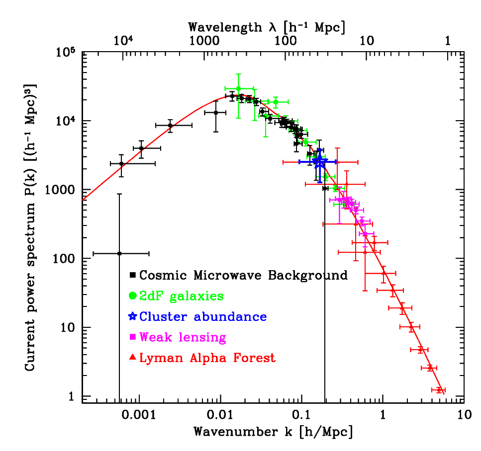

The inhomogeneous Universe
Dark matter: the driver for structure formation
See slides 20, 21 and 22 here
Dark matter was first proposed by astronomer Fritz Zwicky who observed the velocity dispersion of galaxies in the nearby Coma and Virgo cluster of galaxies. He calculated an estimate of the dynamical mass of the galaxy cluster by using the virial theorem
\begin{eqnarray} \sigma^2 \approx \frac{GM}{R} \end{eqnarray}
He found out that the velocity dispersion implied a dynamical mass for the cluster which was much bigger than the mass contained within the stars of the constituents galaxies. Even after accounting for the gas component (which can only be seen in X-rays and was discovered much later), the mass shortfall meant that something is missing in our understanding of the Universe. Zwicky termed this excess unseen mass, dark matter.
The presence of Dark matter was later confirmed by astronomer Vera Rubin who looked at the rotation velocities of gas in nearby spiral galaxies. If ordinary matter was the only component of matter, then the gas rotation velocities around a galaxy should have shown a Keplerian fall-off with \(v \propto R^{-1/2}\). Instead she found that the velocity of gas flattens out, implying that the mass distribution should grow as a function of the radius \(R\).
The existence of dark matter is also evident in the CMB temperature fluctuations. Without the presence of dark matter, the fluctuations seen in the temperature power spectrum will have a different characteristic. The height of the peaks in the CMB power spectrum can tell us the ratios of the baryonic matter to that of radiation as well as baryonic matter to matter which does not couple with radiation.
As you will see next the density fluctuations grow as the scale factor in the matter dominated regime. Given that we see density fluctuations in ordinary matter in the CMB of the order \(\delta ~ 10^{-5}\), these fluctuations would grow at most by a factor 1000 till today. Without the presence of dark matter there is no way they could have formed the large scale structure in the Universe which is highly non-linear with fluctuations of the order \(\delta ~ 100\). Dark matter could be a thermal relic which decouled early on in the history of the Universe, and because it decoupled from the thermal bath, its fluctuations were able to grow until the decoupling of protons, electrons and radiation (which happens at recombination).
The origin of fluctuations
Before we study the growth of fluctuations, let us talk about the origin of the density flcutations in the Universe.
At the very early stages the Universe also underwent a phase of an exponential expansion called inflation. Inflation is able to explain why the temperature of the CMB is so uniform. Regions which were in causal contact were expanded such that they now do not remain in causal contact. For the observable Universe to have the same temperature of the CMB throughout, requires about 56 efoldings of inflation. To give an order of magnitude estimate as to how big this is. Consider a physical region which is a cube of side 3 cm each. This small region will expand to a cube which has side length greater than the distance to the Andromeda galaxy.
Tiny quantum fluctuations during the inflationary era get stretched to astronomical scales, and these fluctuations act as the seeds for the formation of structure in the Universe. The fluctuations are Gaussian in nature. Let us try to understand the statistical properties of these fluctuations.
The overdensity, \(\delta(\vec{x})\) is given by
\begin{equation} \delta(\vec{x}) = \frac{\rho(\vec{x})}{\bar\rho} - 1 \end{equation}
Given that the fluctuations are Gaussian one can characterize them fully, by the mean (zero by construction), and the covariance \(\langle\delta(\vec{x})\delta(\vec{x}+\vec{r}) \rangle\). Invoking translational and rotational invariance, this quantity should only depend upon the modulus of the distance \(|\vec{r}|\). This quantity is called the two point correlation function, \(\xi(r)\).
It is often useful to work in Fourier space. The overdensity field in Fourier space is given by
\begin{equation} \delta(\vec{k}) = \int d^3{\vec x} \,\delta(\vec{x}) \,e^{-i\vec{k}.\vec{x}} \end{equation}
The correlation in Fourier space, \(\langle \delta(\vec{k})\delta(\vec{k'}) \rangle\) is then given by
\begin{eqnarray} \langle \delta(\vec{k})\delta(\vec{k'}) \rangle &=& \int d^3 \vec{x'} \int d^{3} \vec{x} \langle \delta(\vec{x}) \delta(\vec{x}') \rangle e^{-i(\vec{k}.\vec{x}+\vec{k}'.\vec{x}')} \\ &=& \int d^3 \vec{x'} e^{-i(\vec{k}+\vec{k'}).\vec{x'}} \left[ \int d^{3} \vec{y} \,\xi(\vec{y}) e^{-i\vec{k}.\vec{y}}\right] \\ &=& (2\pi)^3 P(\vec{k}) \delta_{\rm D} (\vec{k}+\vec{k'}) \end{eqnarray}
where we have changed variable to \(\vec{y}=\vec{x}-\vec{x'}\) in the inner integral, the power spectrum \(P(\vec{k})\) is the fourier transform of the correlation function \(\xi(\vec{r})\). Rotational invariance further demands that the power spectrum should only be a function of the modulus of \(\vec{k}\). The Power spectrum has dimensions of volume, so the dimensionless quantity \(\Delta(k)\) can be constructed which represents the power per logarithmic interval in \(k\),
\begin{equation} \Delta(k) = \frac{k^3}{2\pi^2} P(k) \end{equation}
Similar to the density fluctuations one can also consider potential fluctuations and the power spectrum of potential fluctuations. The potential fluctuations are related to the density fluctuations with the Poisson equation,
\begin{eqnarray} \nabla^2 \delta_{\rm \phi} \propto \delta \\ k^2 \delta_{\rm \phi}(k) \propto \delta(k) \end{eqnarray}
The power in the initial potential fluctuations per logarithmic interval of \(k\) set by inflation is constant due to scale invariance, i.e., $:nbsphinx-math:Delta{:nbsphinx-math:`phi`} = k^3 P{\phi}(k) = $ constant. This implies that the initial density power spectrum
\begin{equation} P(k) \propto k \end{equation}
The index in the power spectrum has been measured by data, and is quite close to unity although not exactly unity. Since inflation ends at a certain epoch, inflation in fact predicts a slope close to unity, but with slight deviations. This deviation has now been measured at more than 5\(\sigma\) in the data.
These fluctuations are set at the end of inflation. The Universe then enters an era of radiation domination. The density fluctuations set at the end of inflation will grow. There are two regimes to consider, one for fluctuations whose wavelengths are beyond the horizon, and the others where the wavelength is within the horizon. The growth of fluctuations which are larger than the horizon can be understood by understanding that such fluctuations behave as if they are in a Universe of their own, but with a different curvature. If the background cosmology is flat, then the background Universe obeys
\begin{equation} \left(\frac{\dot{a}}{a}\right)^2 = \frac{8\pi G \rho}{3} \end{equation}
while the Universe with the fluctuation will have
\begin{equation} \left(\frac{\dot{a_1}}{a_1}\right)^2 = \frac{8\pi G \rho(1+\delta)}{3} + \frac{C'}{a_1^2} \end{equation}
As the fluctuations are small, the differences between \(a_1\) and \(a\) are bound to be small. This implies that the two scale factors closely follow each other when the fluctuations are small. Then we can write,
\begin{eqnarray} \frac{8\pi G \rho(1+\delta)}{3} + \frac{C'}{a_1^2} = \frac{8\pi G \rho}{3} \end{eqnarray}
which allows us to show that
\begin{eqnarray} \delta = \frac{-3C'}{a^2\rho} \end{eqnarray}
In the radiation dominated era, \(\rho \propto a^{-4}\), thus the fluctuations beyond the horizon grow with the scale factor \(a^2\), while in the matter dominated era where \(\rho \propto a^{-3}\), the fluctuation grow as the scale factor.
For the growth of fluctuations with wavelengths within the horizon, one needs to consider the timescales for collapse of these perturbations to the time scale of expansion. The time scale for collapse is given by \((G\rho_{\rm m})^{-1/2}\) while the time scale for expansion is given by \((G\rho_{\rm tot})^{-1/2}\). In the radiation dominated era, the modes within the horizon cannot grow as the expansion time scale is shorter than the collapse time scale. In the matter dominated era the time scales are comparable and the fluctuations are able to grow at the same rate as you see for scales beyond the horizon. This results in a characteristic power spectrum which has a turnover imprinted at the scale of matter radiation equality. This scale has also been seen in observations now. These inhomogeneities then grow as a function of time in order to form structures that we see today.

Borrowed from Tegmark et al 2002.
Beyond this, the growth rates of all modes are proportional to the scale factor if \(\Omega_{\rm m}=1\). In reality there are correction factors that need to account for the presence of any vacuum energy density which reduces the variation of the growth factor with the scale factor (but we will not go into the details of this here).
Thus the recipe to understand the large scale structure of the Universe is simple. We set up tiny density perturbations at the epoch of matter radiation equality. Then we evolve them under the rules of gravity. Dark matter only interacts gravitationally, so it is easiest to simulate the behavior of dark matter with collisionless particles in an n-body simulation.
In the animation below, we can see a simulated patch of the Universe about 80 Mpc on each side, which is filled with a large number of particles. These particles are initially kept on a grid, but then slightly perturbed such that the resultant density perturbations follow the power spectrum that we derived above. We can see the result of the evolution of these density perturbations due to gravitational collapse of these density perturbations. We would like to understand this behaviour.
[1]:
from IPython.display import Video, HTML, YouTubeVideo
width=600
height=400
YouTubeVideo("eDGtFRj4xXc", width=width, height=height)
[1]:
Spherical collapse of a top hat perturbation
The collapse of these perturbations looks quite complicated. Therefore let us first study the collapse of a simple spherical tophat perturbation. Let us assume that we are in a flat matter only cosmological model. Let there be a spherical top hat perturbation with radius \(R_0\) in the density field centered at the origin. The density within this perturbation is given by \(\rho\) such that \(\rho/\rho_{\rm crit} = \rho/\bar\rho = \Omega_{\rm m}>1\). We would like to understand the behaviour of this density perturbation with time.
Because of the spherical symmetry, the density perturbation inside \(R_0\) will not be affected by any mass which is outside \(R_0\) and thus will evolve independently as a separate Universe. The radius \(R_0\) of this perturbation will change proportional to the scale factor in this part of the Universe. The scale factor dependence on time is given by the Friedmann equation,
\begin{eqnarray} \frac{1}{a}\frac{da}{dt} = H_0 \left[ \Omega_{\rm m} a^{-3} + (1 - \Omega_{\rm m}) a^{-2} \right]^{1/2} \end{eqnarray}
We have solved this equation before using a code. We saw that the Universe like this reaches a finite maximum scale factor and then the scale factor starts to decrease once again. It turns out that there is actually a parametric solution for this case.
If you change variable such that \(a=A(1-\cos \theta)\) where \(2 A=\Omega_{\rm m}/(\Omega_{\rm m}-1)\). Then substitute in the left hand side of the equation, we will get that
\begin{eqnarray} \sin^{2} \left(\frac{\theta}{2}\right) \frac{d\theta}{dt} = H_0\frac{\left(\Omega_{\rm m}-1\right)^{3/2}}{\Omega_{\rm m}} \end{eqnarray}
Exercise:
Show that the above equation can be indeed obtained after substitution of \(a=A(1-\cos \theta)\) in the Friedmann equation given above.
We can get an expression for \(t\) in terms of \(\theta\), by integrating the above equation, and expressing \(\sin^2 \theta/2\) in terms of \(\cos \theta\). We obtain \(t = B (\theta - \sin \theta)\) with \(2 B= H_{0}^{-1}\Omega_{\rm m}/(\Omega_{\rm m}-1)^{3/2}\). Thus the parametric solution for the scale factor is given in terms of \(\theta\) as
\begin{eqnarray} a = A (1-\cos\theta)\\ t = B (\theta - \sin\theta) \end{eqnarray}
The maximum is reached when \(\theta=\pi\), when \(a=2A\), \(t=B\pi\), \(R=2 R_0 A\), while \(\theta=2\pi\) corresponds to \(a=0\) and \(t=2B\pi\) when the perturbation collapses and reaches a singularity.
One can use perturbation theory in the very initial stages by perturbing around \(\theta \rightarrow 0\). This allows to work out how the density within the perturbation changes as a function of time. This linear perturbation theory estimate shows that \(\delta \propto a\) in the early part of the evolution (we had worked this out before). We can then ask what would linear theory predict for the overdensity of the perturbation when it collapses in reality. This value of the overdensity predicted from linear theory is called the critical density threshold for collapse. This value of the critical density threshold for collapse based on linear theory turns out to be equal to 1.686.
Let us consider the leading order expansion of the above formulae in terms of \(\theta\). Then
\begin{eqnarray} a \approx A \left( \frac{\theta^2}{2} - \frac{\theta^4}{24} \right) \\ t \approx B \left( \frac{\theta^3}{6} - \frac{\theta^5}{120} \right) \end{eqnarray}
If we consider just the first order then we obtain
\begin{eqnarray} a &\approx& A \frac{\theta^2}{2}\\ t &\approx& B \frac{\theta^3}{6} \\ a &\approx& \frac{A}{2} \left( \frac{6t}{B} \right)^{2/3} \end{eqnarray}
We can iteratively solve for the next order by considering the \(t(\theta)\) expression and noting \begin{eqnarray} t &\approx& B \frac{\theta^3}{6} \left( 1 - \frac{\theta^2}{20} \right) \\ &\approx& B \frac{\theta^3}{6} \left( 1 - \frac{1}{20}\left(\frac{6t}{B}\right)^{2/3} \right)\\ \theta^3 &\approx& \frac{6t}{B}\left( 1 + \frac{1}{20}\left(\frac{6t}{B}\right)^{2/3} \right)\\ \theta &\approx& \left( \frac{6t}{B} \right)^{1/3} \left( 1 + \frac{1}{60}\left(\frac{6t}{B}\right)^{2/3} \right) \end{eqnarray}
Similarly for \(a(t)\), we obtain \begin{eqnarray} a &\approx& \frac{A}{2} \left( \theta^2 - \frac{\theta^4}{12} \right)\\ &\approx& \frac{A}{2} \left(\frac{6t}{B}\right)^{2/3} \left( 1 - \frac{1}{20} \left(\frac{6t}{B}\right)^{2/3} \right) \end{eqnarray}
The density is given by
\begin{eqnarray} \rho &=& \frac{M}{\frac{4}{3}\pi R(t)^3} \\ &=& \frac{M}{\frac{4}{3}\pi R_0^3 a(t)^3} \\ &=& \frac{M}{\frac{4}{3}\pi R_0^3}\frac{8}{A^3}\left(\frac{B}{6t}\right)^2 \left[ 1 + \frac{3}{20} \left(\frac{6t}{B}\right)^{2/3} \right]\\ &=& \bar \rho \left[ 1 + \frac{3}{20} \left(\frac{6t}{B}\right)^{2/3} \right] \end{eqnarray}
Therefore the overdensity contrast evolves with time in the initial stages as:
\begin{eqnarray} \delta &=& \left[\frac{3}{20} \left(\frac{6t}{B}\right)^{2/3} \right] \end{eqnarray}
If we just naively continue this extrapolation of how the overdensity grows, we will of course not be able to predict the overdensity at late times (because we are working in the \(\theta\rightarrow 0\) limit). After all we know that the overdensity collapses at \(t=2B\pi\), when formally the value of the overdensity becomes infinite. But if we naively extrapolate the linear theory prediction, we obtain that the density perturbation collapses when the linear theory prediction gives a value for the evolved perturbation equal to \(\delta_{\rm sc} \approx 1.686\).
The perturbation we considered was a spherical top hat perturbation. Perturbations in the Universe are clearly more complicated, since they do not obey spherical symmetry. Thus in reality the collapse does not proceed to a singularity. The various shells of masses start crossing each other and lead to a virialization process for the halo. Let us compute what is the overdensity of the perturbation with respect to the average density of the Universe at the time of collapse.
First note that, \begin{eqnarray} \frac{\rho(t)}{\rho_{\rm bg}(t)} &=& \left[\frac{a_{\rm bg}}{a(t)}\right]^3\,, \end{eqnarray} where \(a_{\rm bg}\) is the scale factor of the background Universe. Since we assumed the background model to be a flat Universe with only a matter component, based on the Friedmann equations for the background Universe, we have, \begin{eqnarray} a_{\rm bg}(t) &=& \left[ \frac{3 H_0 t}{2} \right]^{2/3}\,. \end{eqnarray} If we substitute the parametric form of the equations for \(a\) and \(t\) in the Equation for \(\rho(t)/\rho_{\rm bg}\), we obtain \begin{eqnarray} \frac{\rho(t)}{\rho_{\rm bg}(t)} &=& \left[\frac{9 H_0^2 B^2 (\theta-\sin \theta)^2}{4A^3(1-\cos\theta)^3}\right]\,. \end{eqnarray} From the parametric equation and definitions of \(A\) and \(B\), we have \begin{eqnarray} \frac{H_0^2 B^2}{A^3} &=& \frac{2}{\Omega_{\rm m}} \,, \end{eqnarray} which gives \begin{eqnarray} \frac{\rho(t)}{\rho_{\rm bg}(t)} &=& \left[\frac{18 (\theta-\sin \theta)^2}{4\Omega_{\rm m}(1-\cos\theta)^3}\right]\,. \end{eqnarray} The value of \(\Omega_{\rm m}\) is close to unity since the overdensity is small at early times. We can compute the overdensity at turnaround, where the scale factor reaches a maximum value, \begin{eqnarray} \frac{\rho(t_{\rm ta})}{\rho_{\rm bg}(t_{\rm ta})} &=& \left[\frac{18 \pi^2}{4\times2^3}\right]\, = \frac{9\pi^2}{16} \sim 5.552. \end{eqnarray} In order to compute the overdensity at virialization, let us first compute the radius of virialization. The total energy of the system is proportional to \(\sim -GM^2/R_{\rm ta}\) as the overdensity is static at turnaround. At virialization we should have the total energy (equal to half of the potential energy) to be \(\sim -GM^2/(2R_{\rm vir})\). Thus at virialization we should have \(R_{\rm vir}=R_{\rm ta}/2\).
The virialization time is twice the time at turnaround (\(\theta=\pi\) versus \(2\pi\), which gives \(t_{\rm vir}=2t_{\rm ta}\)). At this instance, the background density would have fallen compared to that at turnaround by a factor \(a_{\rm vir}^3/a_{\rm ta}^3 = (2^{2/3})^3 = 4\). On the other hand, since the radius of virialization is half of the radius at turnaround, the density would have grown by factor 8. Thus we obtain that, \begin{eqnarray} \frac{\rho(t_{\rm vir})}{\rho_{\rm bg}(t_{\rm vir})} &=& \frac{\rho(t_{\rm ta})}{\rho_{\rm bg}(t_{\rm ta})} \times 4 \times 8= 18\pi^2 \sim 178. \end{eqnarray}
We did all these calculations based on the assumption of a background model with only matter and a flat cosmology. These results can be generalized for more complicated models with curvature and dark energy density. In that case, we will get a different growth rate for perturbations in the linear regime (this factor is called the growth rate factor \(D(z)\)), a slightly different collapse threshold and a different value for the virialization overdensity \(\Delta_{\rm vir}\).
Formation and statistics of dark matter halos
The fluctuations in the dark matter component at the end of radiation domination have a characteristic power spectrum \(P(k)\). We have discussed the statistics of these fluctuations before. These flcutuations grow with time leading to the growth of the power spectrum. For scales with overdensities \(\delta << 1\), the growth factor can be calculated using linear perturbation theory as we did in the last section. Scales with \(\delta \sim 1\), their fluctuation amplitudes grow non-linearly and these scales can collapse in to bound virialized regions as we saw in the simple spherical collapse model.
Now consider a region in a simulation box, evolve its densities with the linear growth factor and compute the average of the overdensity field around it within a sphere of radius \(R\). We can obtain a distribution of such overdensities if you consider different locations of the simulation box. Given that the initial density field is a Gaussian, this smoothed density field will also be a Gaussian with a certain variance. Let us try to compute this variance.
\begin{eqnarray} \delta_{R}(\vec{x}) = \int d^3 \vec{x}' \delta(\vec{x}') W_{R}(\vec{x}-\vec{x}') \end{eqnarray} where the window function \(W_{R}(\vec{x}\) can be defined as
\begin{equation} W_R(\vec{r}) = 0 \,\, \forall |\vec{r}|\gt R \end{equation} \begin{equation} W_R(\vec{r}) = \frac{3}{4\pi R^3} \,\, \forall |\vec{r}| \leq R \end{equation}
The variance of this field is then given by
\begin{eqnarray} \langle \delta_R(\vec{x})^2 \rangle &=& \int d^3 \vec{x'} \int d^3 \vec{x''} \langle \delta(\vec{x}')\delta(\vec{x}'')\rangle W_R(\vec{x}-\vec{x}') W_R(\vec{x}-\vec{x}'') \\ &=& \int d^3 \vec{x'} \int d^3 \vec{x''} \xi(\vec{x}'-\vec{x}'') W_R(\vec{x}-\vec{x}') W_R(\vec{x}-\vec{x}'') \end{eqnarray}
This double convolution can be easily evaluated in Fourier space and then transformed back to obtain
\begin{eqnarray} \sigma_{R}^2 = \langle \delta_R(\vec{x})^2 \rangle &=& {\rm FT} \left[ P(k) W_R(k)^2 \right] \end{eqnarray}
As \(R\rightarrow \infty\), the variance goes to zero, but its behaviour with \(R\) will depend upon the power spectrum. For the power spectrum in the concordance cosmological model, the power spectrum just decreases with \(R\). Now the initial conditions could be evolved with the linear growth rate, and could be smoothed with a large radius \(R\) and ask if there is any point which has a density above the critical density at a given redshift. The radius can be shrunk until there are points which have \(\delta_R(\vec{x})\) greater than the critical density threshold. Those locations will correspond to the particles in the initial density field which lead to the formation of a halo of mass \(M\). Continuing the march downwards would allow us to identify the halos starting from initial conditions.
The fraction of mass bound in halos of mass \(M\) and above can then be calculated as
\begin{equation} F(>M) = \int_{\delta_c}^{\infty} P(\delta|\sigma_{\rm R}) d\delta \end{equation} \begin{equation} F(>M) = \frac{1}{2}{\rm erfc} \left(\frac{\delta_c}{\sqrt{2}\sigma_{\rm R}}\right) \end{equation}
The number density of halos with mass in the range \([M, M+dM]\) is given by
\begin{equation} \frac{d}{dM} n(>M) = \frac{\bar\rho}{M}\frac{d}{dM}F(>M) \end{equation} \begin{equation} \frac{d}{dM} n(>M) \propto \frac{\bar\rho}{M^2} \exp\left(-\frac{\delta_{\rm c}^2}{2\sigma^2}\right)\frac{\delta_c}{\sigma}\frac{d\ln\sigma}{d\ln M} \end{equation} This particular way to derive the halo mass function was first presented by Press and Schechter in 1974. The mass function they found showed that only half of the mass in the Universe would be bound in halos. So they had added a fudge factor of 2 to the mass function they obtained with these arguments. The factor of 2 is already missing in the first equation of the above argument. This was pointed out by Bond et al. 1992. The solution for the statistical problem corresponding to this problem was first presented by Chandrasekhar some time before (he was not solving the mass function problem). It has to do with regions which are underdense than the critical threshold but are part of bigger overdensities (it is called the cloud-in-cloud problem).
The Press Schechter mass function qualitatively reproduces the halo mass function observed in simulations, you see a power law at the low mass end, and an exponential drop off at the massive end. There have been many advances in understanding the halo mass function theoretically with more quantitative success: in particular the use of ellipsoidal collapse rather than spherical collapse to set the critical threshold for collapse (e.g., Sheth, Mo, Tormen 1999, 2001), stochasticity in the critical threshold (e.g., Corasaniti et al 2011), statistics of peaks (Paranjape et al. 2013). However, these approaches often lead to better functional forms whose free parameters are tuned in order to fit the halo mass function in arbitrary cosmologies.
The mass function appears fairly universal, but there are small deviations and these have been now well characterized with the help of numerical simulations. Fitting functions or interpolation routines that can compute the mass function for a given mass and redshift are available. The following figure from Tinker et al. (2008) shows a comparison between the halo mass function as measured from numerical simulations and the Press Schechter mass function.
The mass function can also be written as \begin{equation} n(M) \equiv \frac{d}{dM} n(>M) \propto \frac{\bar\rho}{M^2} \nu \exp\left(-\frac{\nu^2}{2}\right)\left|\frac{d\ln\sigma}{d\ln M}\right| \end{equation} where we have defined the peak height \(\nu=\delta_{\rm c}/\sigma(M)\). The peak height tells how big is \(\delta_{\rm c}\) with respect to the rms of the fluctuations of scales of mass \(M\). The bigger the rms fluctuation, the more abundant halos of that mass.
[2]:
from IPython.display import Image
width = 600
Image("images/mass_function.png", width=width)
[2]:
The bias of dark matter halos
There are fluctuations in the Universe on a variety of scales. The rms of larger scale fluctuations is smaller than that of small scale fluctuations. However it can affect the number of halos that fall in a patch of the Universe which has this large scale fluctuation in it.
Consider a large patch of the Universe which has an overdensity today \(\delta_0\). Given that this is a large patch of the Universe we expect \(\delta_0\) to be very similar to its linearly extrapolated value from the initial overdensity field. Now let us consider the mass function of halos of mass \(M\). These form out of overdensities of much smaller scales \(\delta_1\). Because these fluctuations are sitting on top of a more large scale fluctuation \(\delta_0\), it is now easier for even smaller values of \(\delta_1\) to reach the collapse threshold, \(\delta_{\rm c}\). The number density of halos of mass \(M\) thus would be \begin{align} n(M,z|\delta_0) &\approx n(M, z) - \frac{\partial n}{\partial \delta_{\rm c}} \delta_0 \\ \delta_{\rm h}^{\rm L} &= \frac{n(M,z|\delta_0) - n(M,z) }{n(M, z)} = -\frac{1}{n}\frac{\partial n}{\partial \delta_{\rm c}} \delta_0 \end{align} We can write the proportionality constant between the overdensity of halos and overdensity of dark matter in terms of the peak height. \begin{align} \frac{1}{n}\frac{\partial n}{\partial \delta_{\rm c}} &= \frac{\partial \ln n}{\partial \delta_{\rm c}} \\ &= \frac{\partial \ln n}{\partial \delta_{\rm c}} \\ &= \frac{\partial \ln [\nu f(\nu)]}{\partial \delta_{\rm c}} \\ &= \left[ \frac{1}{\nu} + \frac{f'(\nu)}{f(\nu)} \right] \frac{\partial \nu}{\partial \delta_{\rm c}} \\ &= \left[ \frac{1}{\nu} - \nu \right] \frac{\partial \nu}{\partial \delta_{\rm c}} \\ &= \frac{1-\nu^2}{\sigma \nu} \end{align} Therefore \begin{align} \delta_{\rm h}^{\rm L} &= \frac{\nu^2-1}{\sigma \nu} \delta_0 \end{align} This however is the overdensity of halos in Lagrangian space. The number density of halos is modified in a volume which is overdense due to the fluctuation \(\delta_0\) because the comoving volumes in the overdense patch are related to the global lagrangian volume with \(V_0 = V(1+\delta_0)\). Therefore \begin{align} \delta_{\rm h}^{\rm E} &= (1+\delta_{\rm h}^{\rm L})(1+\delta_0) - 1\\ &= \delta_{\rm h}^{\rm L} + \delta_0 \\ &= \left[1 + \frac{\nu^2-1}{\sigma \nu}\right] \delta_0 \end{align} Thus dark matter halos in the same location of space have a different overdensity compared to the overdensity of dark matter. The ratios of these two overdensities is called the halo bias.
Galaxies live in dark matter halos, and therefore their distribution is also expected to be biased, due to the presence of halo bias. When galaxy clustering (either as a correlation function or power spectrum) is measured, it probes the underlying clustering of matter in a biased manner. \begin{align} \xi_{\rm gg}(r) &= b^2 \xi_{\rm mm}(r) \\ P_{\rm gg}(k) &= b^2 P_{\rm mm}(k) \\ \end{align} This halo bias is the scale independent quantity derived above on large scales, but acquires further scale dependence as we approach distances of the same order as the radius of the halo.
The growth of density perturbations
The growth of density perturbations inside the horizon can be worked out using Newtonian dynamics when perturbation are small and their scales are smaller than the horizon where curvature effects dominate. We start with the continuity equation in physical coordinates \begin{align} \frac{\partial \bar\rho}{\partial t} + \vec{\nabla} \cdot [\rho \vec{v_0}] = 0 \end{align} Consider a perturbation \(\delta \rho\) in the density and \(\delta v\) in the velocity. \begin{align} \frac{\partial [\bar\rho(1+\delta]}{\partial t} + \vec{\nabla} \cdot [\bar\rho (1+\delta)(\vec{v_0} + \delta\vec{v})] = 0 \end{align} Using the background equations and keeping terms only until linear order we obtain \begin{align} \frac{\partial [\bar\rho \delta]}{\partial t} + \bar\rho \vec{\nabla} \cdot [\delta \vec{v_0} + \delta\vec{v}] &= 0 \\ \frac{\partial [\bar\rho \delta]}{\partial t} + \bar\rho \vec{\nabla} \cdot \delta\vec{v} + \bar\rho \vec{v_0} \cdot \vec{\nabla} \delta + \bar\rho \delta \vec\nabla \cdot \vec{v_0} &= 0 \\ \bar\rho \frac{\partial \delta}{\partial t} + \delta \frac{\partial \bar\rho}{\partial t} + \bar\rho \vec{\nabla} \cdot \delta\vec{v} + \bar\rho \vec{v_0} \cdot \vec{\nabla} \delta + \bar\rho \delta \vec\nabla \cdot \vec{v_0} &= 0 \\ \frac{\partial \delta}{\partial t} + \vec{\nabla} \cdot \delta\vec{v} + \vec{v_0} \cdot \vec{\nabla} \delta = 0 \end{align} This equation can be converted in to comoving coordinates by using \(\vec{x} = \vec{r}/a\) and the gradients will transform as \(\vec{\nabla}_{r} = a^{-1}\vec{\nabla}_{x}\). We can equate the total differential of any function \(f(\vec{r}, t)\) to understand how any derivatives transform :nbsphinx-math:`begin{align} df &= frac{partial f}{partial t}dt + vec{nabla}_{r} f cdot dvec{r} \
&= frac{partial f}{partial t}dt + vec{nabla}_{r} f cdot d [avec{x}] \ &= frac{partial f}{partial t}dt + vec{nabla}_{r} f cdot left( a d vec{x} + vec{x}dot{a} dtright)\ &= frac{partial f}{partial t}dt + vec{nabla}_{x} f cdot left( d vec{x} + vec{x} H dtright) \ &= left[frac{partial f}{partial t} + H vec{x}cdot vec{nabla}_{x} f right]dt + vec{nabla}_{x} f cdot left( d vec{x} right)
end{align}` Thus the continuity equation in comoving coordinates looks like \begin{align} \dot \delta + \vec{\nabla}_{x} \cdot \vec{u} = 0 \end{align} where \(\vec{u}=a^{-1}\delta \vec{v}\).
Similarly one can use the Euler equation to perturbatively write \begin{align} \dot{\vec{u}} + 2 H \vec{u} = -\frac{\nabla \delta\Phi}{a^2} \end{align} where we have assumed pressureless fluid. And the final equation is the Poisson equation :nbsphinx-math:`begin{align}
nabla^2 deltaPhi = 4 pi G barrho a^2delta
end{align}`
To proceed one can take a further time derivative of the continuity equation for perturbations and and use the Euler equation of perturbations to get rid of the derivative of \(\vec{u}\) term. This leaves us with \begin{align} \ddot \delta + 2 H \dot \delta &= 4\pi G\bar\rho \delta \\ &= 4\pi G \bar\rho_{0} (1+z)^3 \delta \\ &= \frac{3H_0^2 (1+z)^3}{2} \Omega_{\rm m} \delta \end{align} This equation can then be solved to obtain how the density perturbations grow in a general Universe. For a flat \(\Lambda\)CDM the growth factor can be shown to be equal to the scale factor itself. The solution of this equation is called the growth rate \(D(a)\).
Exercise:
Convert the above equation such that the derivatives are with respect to \(\ln a(t)\) instead of time \(t\).
Solve the equation with initial condition \(\delta = 1\), and \(d\delta/d\ln a=1\) at \(a=0.001\).
Measurements of the clustering
In order to measure the clustering of objects in a distribution we use the correlation function which is \(\xi(r) = \langle\delta(\vec x)\delta(\vec x+\vec r)\rangle\). Given the definition of \(\delta(x)\), we can write \begin{align} \xi(r) &= \langle\delta(\vec x)\delta(\vec x+ \vec r)\rangle \\ &= \left\langle \frac{(n_{\rm g}(\vec x) - \bar{n}_{\rm g})}{\bar{n}_{\rm g}} \frac{(n_{\rm g}(\vec x+ \vec r) - \bar{n}_{\rm g})}{\bar{n}_{\rm g}} \right\rangle \\ &= \frac{ \langle n_{\rm g}(\vec x)(n_{\rm g}(\vec x+ \vec r)\rangle}{\bar{n}_{\rm g}^2} - 1 \\ &= \frac{ \langle n_{\rm g}(\vec x)(n_{\rm g}(\vec x+ \vec r)\rangle d^3{\vec x} d^3\vec{x'}}{\bar{n}_{\rm g}^2 d^3{\vec x} d^3\vec{x'}} - 1 \\ \end{align} The numerator here counts the number of pairs of galaxies in two infinitesimally small volumes that are separated by a distance \(r\) while the denominator counts the number of pairs expected on average if the galaxies were distributed completely randomly. This allows us to write down an estimator to measure the correlation function \begin{align} \xi(r) = \frac{DD}{RR} - 1 \end{align} where DD denotes the number of pairs in your dataset separated by a distance in \([r, r+dr]\), while RR denotes the number of pairs if they were distributed randomly. If we are considering a simulation box with periodic boundary conditions, it is possible to write down \(RR\) analytically as \(N \bar{n} 4\pi r^2 dr\), where N is the total number of particles and \(\bar n\) is the average number density of particles in the simulation.
Similar estimators are used in actual galaxy survey where the masks are quite complicated. In order to reduce the variance of the measurement, it is better to use the Landy Szalay estimator instead \begin{align} \xi(r) = \frac{DD - 2DR + RR}{RR} \end{align} This estimator can also be derived in the same manner as the first estimator above. As the distributions we consider are quite clustered, if we use the same number of random points as in your clustered data this estimate of RR or DR can be affected by Poisson noise. To get over this issue, we typically use larger number of random points then data, and adjust each of the terms by an apprpriate power of the fraction \(f=N_{\rm d}/N_{\rm r}\).
In order to carry out these measurements we resort to using trees in order to reduce the problem to be \(N \log N\) instead of the brute force \(N^2\) calculation.
Reading Exercise:
Read the wikipedia page for kd-tree.
Use the kdtree module in scipy.spatial to write code that will compute the clustering of particles in a box of volume \(L^3\) that you may obtain from numerical simulations. Assume the input will be \(x, y, z\) of each particle, and the box length.
Baryon acoustic oscillations
The size of the sound horizon at recombination is frozen in to the initial density fluctuation field of baryons. Even though the baryons evolve under the influence of the dark matter distribution, this sound horizon remains imprinted in the correlation function of galaxies and has now been observed in galaxy surveys as a bump on scales of \(\sim 150\,{\rm h^{-1}Mpc}\).
This can act as a standardizable ruler. In particular since it is the same angular scale that is also imprinted in the cosmic microwave background radiation, we can obtain the ratio of the angular diameter distances to the galaxies against the distance to recombination. This allows another interesting geometric test and thus a way to infer the cosmological parameters in the Universe.
Redshift space distortions
Thus far we have talked about the correlation function being isotropic. This is indeed the case in an isotropic and homogeneous Universe. However when we measure galaxy positions, we do not measure their actual distances to us, but we measure their redshifts and use a cosmological model to convert these redshifts to distances. The peculiar velocities are thus expected to corrupt the distance measurements.
If we look at a slice of galaxies in a particular region of the sky and plot the angular position versus redshift, the galaxies appear to be distributed along elongated structures pointing directly towards the observer. This effect is called the Fingers of god effect. This in reality is a mirage.
On large scales one actually sees the opposite. Since galaxies live in large overdensities, the galaxies in nearby regions tend to fall on to these overdensities. Therefore we expect their separations to appear smaller than they really are. This is called the Kaiser effect (see Kaiser 1984).
This Kaiser effect is quite important and can also reveal cosmological information.
For simplicity, consider configuration space, and assume that the plane parallel approximation holds, and that the \(z\) direction corresponds to the line-of-sight. The following coordinate transformation maps real space to redshift space, \begin{align} x = x'; y = y', z=z' + \frac{u}{H} \mu \end{align} where the angle between the line of sight and the peculiar velocity \(u\) is \(\theta = \cos^{-1}\mu\).
Now consider a sample of galaxies characterized by its overdensity \(\delta\). Number density conservation relates the redshift space overdensity to the real space overdensity such that \begin{align} \left[1+\delta_{\rm red}(x', y', z')\right]dx' dy' dz' &= \left[1+\delta_{\rm real}(x, y, z)\right]dx dy dz\\ \left[1+\delta_{\rm red}\right]\frac{dz'}{dz} &= \left[1+\delta_{\rm real}\right]\\ \left[1+\delta_{\rm red}\right](1 - H^{-1}\mu \partial_{\rm z}u) &= \left[1+\delta_{\rm real}\right] \\ \delta_{\rm red} &= \delta_{\rm real} - H^{-1}\mu \partial_{\rm z}u \\ \delta_{\rm red} &= \delta_{\rm real} - H^{-1}\mu^2 \nabla \cdot u \\ \delta_{\rm red} &= \delta_{\rm real} + H^{-1}\mu^2 \dot\delta_{\rm m} \\ \delta_{\rm red} &= \delta_{\rm real} + \mu^2 \frac{d\ln\delta_{\rm m}}{d\ln a}\delta_{\rm m} \\ \delta_{\rm red} &= \delta_{\rm real} + \mu^2 \frac{d\ln\delta_{\rm m}}{d\ln a}\frac{1}{b}\delta_{\rm real} \\ \delta_{\rm red} &= \left[ 1 + \frac{f\mu^2}{b} \right]\delta_{\rm real} \end{align}
The correlation function thus acquires a dependence on direction according to this Kaiser factor. This has also been observed. And can be used to put constraints on the growth rate \(d\ln \delta_{\rm m}/d\ln a\). See the illustration below from Tegmark (2004) to show how fingers of god appear due to peculiar velocities. And the next figure which shows the effect of redshift space distortions on the measured correlation function fromthe 2dfGRS survey by Peacock (2001).
[8]:
Image("images/rsd.jpg", width=width)
[8]:
[7]:
Image("images/rsd_corr.jpg", width=width)
[7]:
[ ]: